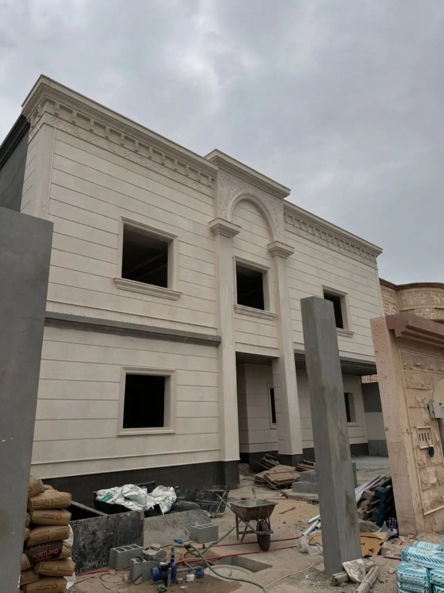

تنفيذ واجهات وتشطيبات فيلا سكنية في حي الفيصلية
دراسة حالة لفيلا سكنية شملت أعمال الواجهات واللياسة والرخام والسيراميك الداخلي والخارجي، على مساحة 900 م²، خلال مدة زمنية بلغت شهرين.
نطاق واضحبنود ومسؤوليات قابلة للمتابعة
تنسيق هندسيربط التخصصات قبل التعارضات
متابعة مرحليةمراجعة الأعمال في توقيتها
تسليم منظمفحص وإغلاق الملاحظات
نظرة عامة على المشروع
تنسيق الواجهات والتشطيبات الداخلية والخارجية ضمن نطاق واحد
شمل مشروع الفيلا تنفيذ الواجهات واللياسة وأعمال الرخام والسيراميك في المساحات الداخلية والخارجية، بما يتطلب تنسيقًا دقيقًا بين تجهيز الأسطح، ضبط المناسيب، وترتيب تركيب مواد التشطيب.
بلغت مساحة المشروع 900 متر مربع، وتم تنفيذ النطاق خلال شهرين، مع متابعة المراحل التي تؤثر مباشرة في استقامة الواجهات وجودة التشطيبات النهائية.
- تنفيذ وتشطيب الواجهات الخارجية
- أعمال اللياسة وتجهيز الأسطح
- تركيب الرخام ضمن نطاق المشروع
- سيراميك داخلي وخارجي

واجهات وتشطيبات فيلا سكنية
بيانات المشروع
المعلومات الأساسية في لمحة واحدة
نطاق التنفيذ
أعمال متكاملة للواجهات والتشطيبات
تم توزيع نطاق العمل على بنود مترابطة تبدأ بتجهيز الأسطح، ثم تنفيذ اللياسة، وتنتهي بتركيب الرخام والسيراميك ومراجعة التفاصيل.
تنفيذ الواجهات
تجهيز وتنفيذ عناصر الواجهة بما يحافظ على تناسق الخطوط والتفاصيل المعمارية الظاهرة.
أعمال اللياسة
معالجة وتجهيز الأسطح وضبط الاستقامة والمناسيب قبل الانتقال إلى مواد التشطيب.
أعمال الرخام
تركيب الرخام في المواقع المحددة بالمشروع مع تنسيق المقاسات والفواصل والتقاء المواد.
السيراميك الداخلي والخارجي
تنفيذ السيراميك في المساحات الداخلية والخارجية مع مراجعة المناسيب والفواصل النهائية.
تسلسل العمل
مراحل تنفيذ تشطيبات الفيلا
اعتمد المشروع على تسلسل يحد من تعارض البنود ويحافظ على جاهزية كل سطح قبل استلام المرحلة التالية.
مراجعة الأسطح
فحص الأسطح والمقاسات والمناسيب وتحديد احتياجات التجهيز قبل بدء أعمال اللياسة.
اللياسة والواجهات
تنفيذ اللياسة وتشكيل تفاصيل الواجهة وفق التسلسل المعتمد للأعمال.
الرخام والسيراميك
تركيب مواد التشطيب الداخلية والخارجية وضبط الفواصل والتقاء الخامات.
المراجعة والتسليم
فحص الاستقامة والمناسيب وجودة التشطيب وإغلاق الملاحظات قبل التسليم.
تنسيق عدة مواد تشطيب
جمع اللياسة والرخام والسيراميك والواجهات في نطاق واحد يساعد على ضبط التقاء المواد وتقليل التعارض بين فرق التنفيذ.
تنفيذ خلال شهرين
تطلب البرنامج الزمني تنظيم توريد المواد وتسلسل البنود ومراجعة كل مرحلة قبل بدء المرحلة التالية.
ملاحظة: تم إعداد دراسة الحالة اعتمادًا على بيانات المشروع والصورة الميدانية المتاحة. تختلف تفاصيل أي مشروع فيلا جديد حسب المخططات ونوع الرخام والسيراميك وتصميم الواجهة ومستوى التشطيب المطلوب.
خدمات مرتبطة
خدمات تدعم تنفيذ مشروع فيلا مشابه
أسئلة شائعة
معلومات سريعة عن مشروع فيلا الفيصلية
إجابات مباشرة حول نطاق المشروع والموقع والمساحة والمدة والصورة الميدانية.
شمل نطاق التنفيذ الواجهات واللياسة والرخام والسيراميك الداخلي والخارجي.
يقع المشروع في حي الفيصلية بمدينة الرياض.
تبلغ مساحة المشروع 900 متر مربع.
بلغت المدة الزمنية للتنفيذ شهرين.
توضح الصورة مرحلة تنفيذ وتشطيب الواجهة الخارجية للفيلا.